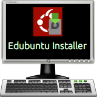

- Edubuntu ships with Edubuntu Installer, an easy way to customize the Edubuntu installation and make it appropriate for any age group.
- By default, Edubuntu comes with software for all age groups and is configured for tertiary/collegiate use in mind.
- To configure it for the target user base, simply run Edubuntu Installer and check or uncheck which software groups you wish to install or uninstall.
- Similarily, checking the box to configure the desktop will reconfigure the defaults to match the target user age group.
